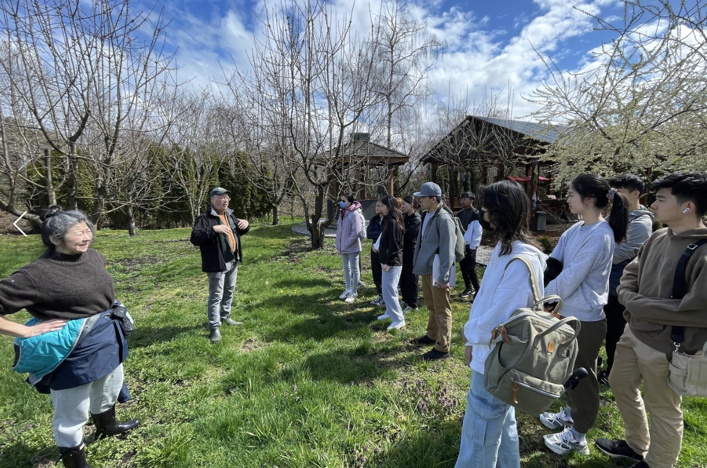
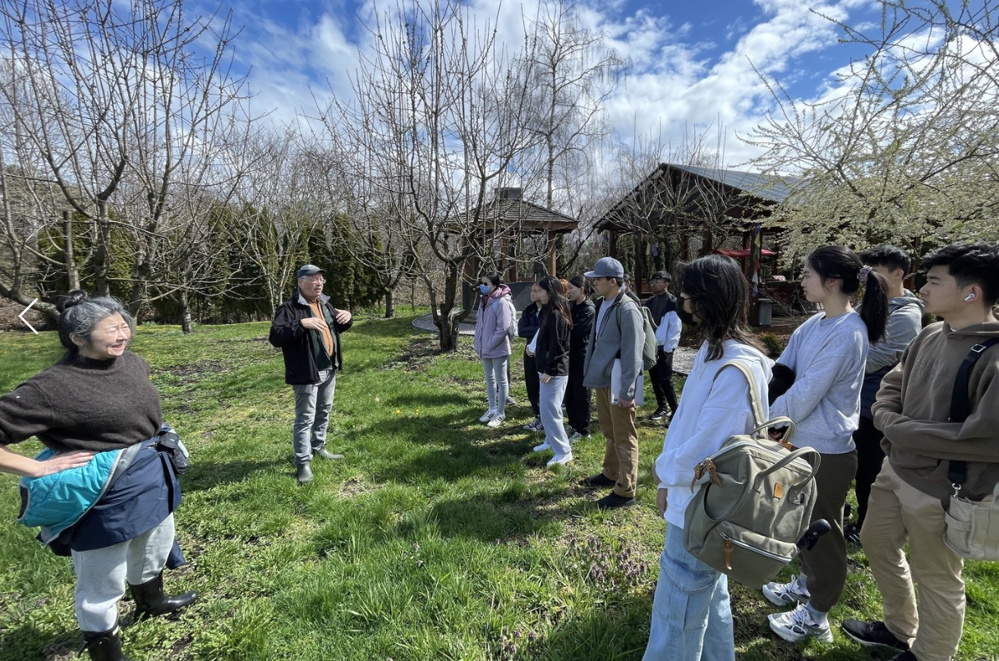

Hunger Project at UCLA
The Hunger Project at UCLA addresses houselessness, food insecurity, and WaSH (water, sanitation, and hygiene) access issues. As the Director of Outreach, I build partnerships with other service organizations to foster collaboration and conduct administrative tasks to support the Executive Directors. More information can be found at: hunger-project-at-ucla.weebly.com.
GardenBank
I have been involved with GardenBank for six years, progressing from Branch Director to President and now serving as an Advisor. Our mission is to combat food disparity while promoting sustainability through initiatives like community food runs and educational events. More information can be found at: gardenbank.org
CBC News Feature
I was featured in CBC news Vancouver to discuss the benefits of gardening in helping our community.
Activities
Our activities include sandwich runs, elementary school workshops, monestry gardening, and more.
 
